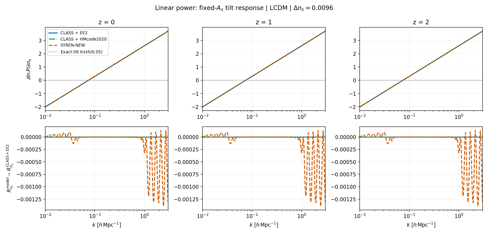
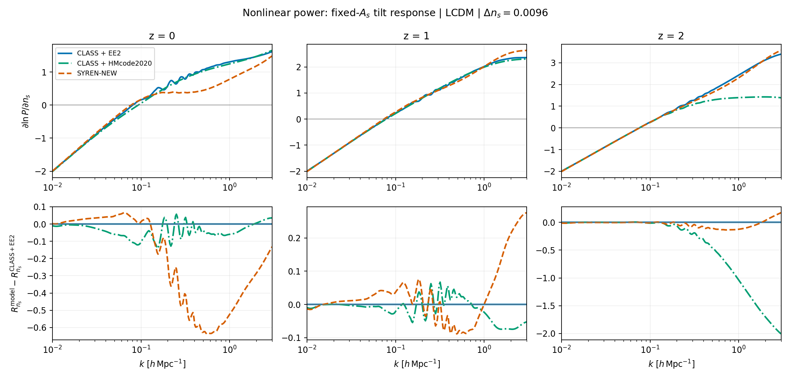
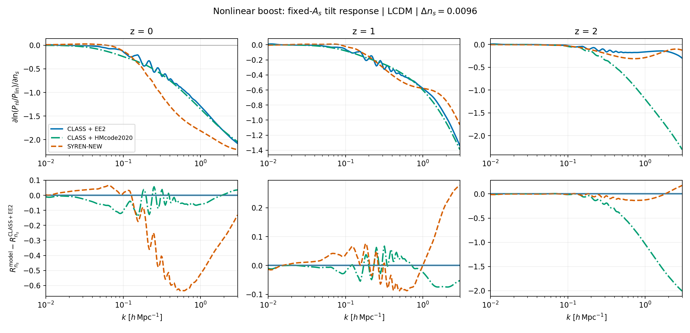
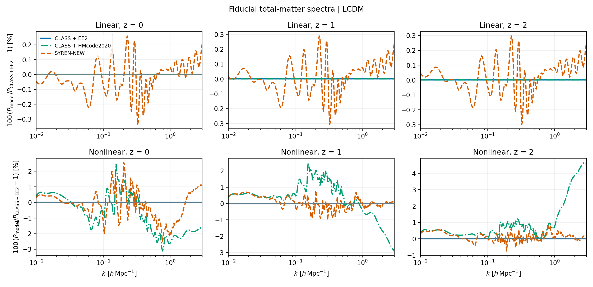

SYREN-NEW spectral-tilt response and photometric Fisher discrepancies#
Main finding#
The photometric comparison identifies the nonlinear response to the primordial
spectral index ns as an important source of SYREN-NEW versus EE2 disagreement.
The symbolic formula contains explicit ns dependence that strongly cancels the
linear tilt response at some low-redshift nonlinear scales. Fixing ns in the
saved LCDM Fisher matrices greatly reduces several marginalized-error differences.
This is evidence of a response mismatch and altered degeneracies, not proof of a transcription error in SYREN-NEW or proof that this derivative is the only source of the Fisher differences. EE2 is the comparison reference, not an assumed exact solution. A controlled derivative-swap experiment remains the cleanest way to isolate causality.
Analysis date: 2026-09-29. The full photometric notebook runs successfully after the earlier HMcode non-finite-grid handling fix; that operational issue is unrelated to the finite-response discrepancy studied here.
Inputs and numerical definitions#
The originating notebook is
SYREN-investigation_Photo-EE2-vs-matched.ipynb.
Despite its historical filename, the inspected run uses the following photo profiles:
Case |
Packaged profile |
|---|---|
CLASS + EE2 |
|
CLASS + HMcode2020 |
|
SYREN-NEW |
|
They reside in cosmicfishpie/configs/default_boltzmann_yaml_files/. The comparison
is for total-matter power, not a separate cold+baryon prediction.
Parameter |
Fiducial |
|---|---|
|
2.1 |
|
0.32 |
|
0.05 |
|
0.67 |
|
0.96 |
|
0.06 eV |
|
−1, 0 |
All other parameters, including primordial amplitude As, are fixed during
the ns variation. The CLASS profiles use the matched three-degenerate-neutrino
translation (N_ur=0.00641, mass-density factor 93.14). The wrapper passes ns
correctly, and its sigma8-to-As conversion is not invoked when 10^9As is supplied.
The response plotted below is a central difference of logarithmic power:
The default half-step is 0.0096, the notebook’s 1% relative ns step. This is
not differentiation with respect to log ns. The script also saves the central
difference of power itself, dP_dns, which is distinct at finite step from
P_fiducial * response.
The plotted grid is k=0.01–3 h/Mpc, at z=0,1,2. The public Pmm API receives
k*h in 1/Mpc; returned Mpc³ values are multiplied by h³. Both source spline
support and positive, finite output are checked. No extrapolated points are used.
Reproduce the figures#
The maintained script is
scripts/validation/plot_ns_power_response.py.
An executable companion with explanations, displayed figures and response tables is
SYREN-investigation_ns-response.ipynb.
Its default path reads the saved artifacts; the optional recomputation cell invokes
the same script rather than reimplementing the backends.
It uses build_analysis_context and cosmo_functions.Pmm for all three cases,
including native CLASS HMcode and CLASS linear power multiplied by EE2’s boost.
It reuses the context’s fiducial cosmology and computes only the two shifted
cosmologies per backend: nine total evaluations, without Fisher or angular-spectrum
calculations.
From the repository root, with CLASS, EuclidEmulator2 and symbolic_pofk installed:
OMP_NUM_THREADS=1 uv run python scripts/validation/plot_ns_power_response.py
To redraw the saved arrays without running a cosmology backend:
uv run python scripts/validation/plot_ns_power_response.py --plot-only
To investigate a smaller step while preserving this reference figure set:
OMP_NUM_THREADS=1 uv run python scripts/validation/plot_ns_power_response.py \
--ns-step 0.0001 --output-dir results/ns_response_small_step
--cosmo-model w0waCDM selects that configuration with fixed fiducial w0=-1, wa=0;
it does not marginalize any parameters. Use a separate output directory for variants.
Run --help for the redshift and k-grid options.
Artifacts: numerical arrays and
run metadata. Metadata records
profile contents/hashes, source hashes, dependency versions, resolved fiducial
backend parameters, units, grid and step. Array power has axes
[backend, minus/fiducial/plus, linear/nonlinear, redshift, k]; response and
dP_dns omit the variation axis, and boost_response also omits the spectrum axis.
Backend order is recorded in labels.
Linear response#

The fixed-As primordial tilt predicts R_ns = ln(k*h/0.05) for physical pivot
0.05/Mpc. The symbolic linear expression has this dependence exactly; its
remaining correction factors are independent of ns for this evaluation path.
The public interfaces interpolate power on finite grids, so their derivatives
need not agree with the analytic curve to machine precision. Both CLASS cases
share the same linear physics.
Nonlinear response#

The lower panels show additive response differences from CLASS+EE2, not percent differences. Dividing by a reference derivative near its zero crossing would create misleading spikes. The broad low-redshift discrepancy away from zero crossings is the scientifically relevant feature.
The generated public-interface run gives the following nonlinear responses at
Delta ns=0.0096:
z |
k [h/Mpc] |
CLASS + EE2 |
CLASS + HMcode2020 |
SYREN-NEW |
|---|---|---|---|---|
0 |
0.2 |
0.584306 |
0.560257 |
0.367360 |
0 |
0.5 |
1.070631 |
1.022561 |
0.442848 |
0 |
1.0 |
1.304604 |
1.245154 |
0.781266 |
1 |
0.5 |
1.518832 |
1.541994 |
1.431714 |
1 |
1.0 |
2.016386 |
1.992768 |
2.017233 |
2 |
0.5 |
1.733373 |
1.278536 |
1.616727 |
2 |
1.0 |
2.432370 |
1.393950 |
2.307892 |
Additional observation, not yet diagnosed: this run also shows a substantial
HMcode high-k response departure at z=2, despite much closer fiducial spectra.
This should be checked with step-size and direct CLASS-accessor comparisons before
attributing it to HMcode physics or interpolation. It is not explained by the
SYREN-specific cancellation below. The plotted results are a single-run diagnostic,
not a numerical-convergence certification of any backend.
Nonlinear-boost response#

The boost response is R_ns(Pnl) - R_ns(Plin). Removing the common primordial
tilt makes differences in the nonlinear corrections easier to identify.
Fiducial spectrum agreement#

These spectra use the same fiducial and interpolation pipeline as the response figures. Good agreement in power values does not guarantee equally accurate parameter responses.
The sensitive terms in the symbolic formula#
In upstream symbolic_pofk/syren_new.py, pnl_new_emulated constructs
L = log10(Plin) and then log10(Pnl) = L + term2 + term3 - term4 - term5 - bias(k).
Besides dependence through L, it has explicit ns dependence in the nonlinear
corrections. The particularly sensitive term3 is
At a=1, ns=0.96, its exponent is −45.397868. The term2 denominator also
contains a power with exponent 27.6818*a - 24.8736*ns (3.803144 at this point).
Large fitted coefficients alone are not evidence of a bug, but the differentiated
terms exhibit a strong cancellation.
The direct-formula chain-rule decomposition at z=0, k=0.5 h/Mpc is:
Contribution to d ln Pnl / d ns |
Value |
|---|---|
Linear primordial tilt |
+1.90210753 |
term2 via linear power L |
−0.13125580 |
term2 explicit ns dependence |
+0.01353874 |
term3 via linear power L |
+0.57108368 |
term3 explicit ns dependence |
−1.91242415 |
Total |
+0.44304999 |
The explicit term3 response almost cancels the linear contribution. The final
pnl_bias(k) correction is independent of ns at fixed h, so it cannot repair
the logarithmic tilt response (although it rescales the absolute derivative).
For source provenance, consult the run metadata’s symbolic_pofk.syren_new entry.
The integration layer is
cosmicfishpie/cosmology/symbolic_new.py.
The maintained plotting script calls that implementation; it does not duplicate
or modify the symbolic fit.
Direct-formula response and step-size check#
The initial diagnosis evaluated the symbolic formula directly and compared it
with exact linear tilt plus the EE2 boost response, before running the
three-backend public-interface plotting script. At Delta ns=0.0001, z=0:
k [h/Mpc] |
SYREN-NEW response |
EE2 boost + exact linear response |
SYREN / reference − 1 |
|---|---|---|---|
0.2 |
0.367503 |
0.584554 |
−37.1% |
0.5 |
0.443050 |
1.074483 |
−58.8% |
1.0 |
0.781669 |
1.302355 |
−40.0% |
These numbers are not a fresh CLASS calculation and need not exactly match the
public-interface figures, which use power interpolation and the notebook’s
larger step. The discrepancy varies with redshift: at z=1, k=0.5, the direct
response difference is approximately −6.1%; at z=1, k=1, approximately −0.6%.
Over k=[0.03,0.05,0.1,0.2,0.5,1,3] h/Mpc and z=[0,1,2], decreasing the
direct SYREN half-step from 0.0096 to 0.0001 changed the log response by at
most 0.00078737. Decreasing 0.001 to 0.0001 changed it by at most
8.459e-6. This is far smaller than the low-z response mismatch. It is a scoped
step-size check of SYREN’s direct expression, not a convergence claim for every
backend or the full projected forecast.
The general distinction is straightforward: if P_syren = P_ref * exp(epsilon),
then R_syren - R_ref = d epsilon / d ns. A small value error at the fiducial
can coexist with a substantial slope error.
Evidence from the saved photometric Fisher matrices#
The existing artifacts under
results/photo_class_ee2_vs_syren_new_minimal_matched/ were inspected, not recomputed.
Their names follow
CosmicFish_v1.3.1_{LCDM|w0waCDM}_photo_{class_ee2|class_hmcode2020|symbolic_syren_new}_GCphWL_FM.txt.
Parameter ordering was read from each accompanying .paramnames file.
Fixing ns means deleting its row and column from the full Fisher matrix, then
inverting the retained block and marginalizing all other retained parameters,
including survey nuisances. It does not mean deleting a covariance row/column.
LCDM parameter |
SYREN vs EE2 marginalized-error difference, ns free |
With ns fixed |
|---|---|---|
As |
−34.73% |
−4.84% |
Omegam |
−3.82% |
−1.52% |
Omegab |
−21.97% |
−8.22% |
h |
−33.76% |
−7.37% |
This supports an important role for ns degeneracies, without establishing sole
causality. A weaker individual response can yield tighter marginalized constraints
if its shape changes parameter correlations. For example, SYREN’s fully conditional
LCDM ns error (1/sqrt(F_ns,ns)) is 8.53% larger than EE2’s, while its
marginalized ns error is 33.78% smaller.
Why w0waCDM can show closer relative agreement#
Adding dark-energy parameters changes the degeneracy structure. Absolute constraints weaken, while the relative discrepancy between backends can shrink:
Marginalized sigma(ns) |
CLASS + EE2 |
CLASS + HMcode2020 |
SYREN-NEW |
|---|---|---|---|
LCDM |
0.015057 |
0.015340 |
0.009971 |
w0waCDM |
0.015418 |
0.019250 |
0.013607 |
The fully conditional errors of the five shared cosmological parameters are unchanged between these two saved model cases for each backend. Closer w0wa percentage agreement is therefore not evidence that the underlying SYREN derivative became more accurate.
Notebook plotting interpretation#
Two details in the inspected notebook matter when reading its saved plots:
The notebook’s
compare_constraintscall usescompare_to_index=1(HMcode2020) even though its axis label and introductory prose say EE2;compare_to_index=0would select EE2, and its printed numerical dictionary does compare against EE2. The spectrum helper has the same mismatch. All figures on this page explicitly use CLASS + EE2 as the reference.The darker “unmarginalized” error shading is computed after omitted nuisance parameters have been marginalized by the plotting helper. It holds the other displayed cosmological parameters fixed; it is not the original full-matrix conditional error. The LCDM SYREN–EE2 ns difference is approximately 10.27% by this plotted definition, versus 8.53% for the full conditional error.
These are observations about the saved notebook version, not changes made to it.
Interpretation and next discriminating check#
The combined evidence supports a nonlinear tilt-response mismatch in the symbolic fit and an associated change in Fisher degeneracies. Neither decreasing the finite-difference step nor adjusting an ns-independent multiplicative bias is expected to remove the measured direct-formula mismatch.
The next controlled experiment should replace only the ns angular-spectrum derivative, keeping the covariance, remaining derivatives, parameter ordering, nuisance treatment and priors common. Comparing the resulting marginalized errors would quantify the causal contribution of that one derivative. This experiment has not been performed here. Removing or retuning the symbolic term ad hoc would change the calibrated model and is not justified by this diagnostic alone.